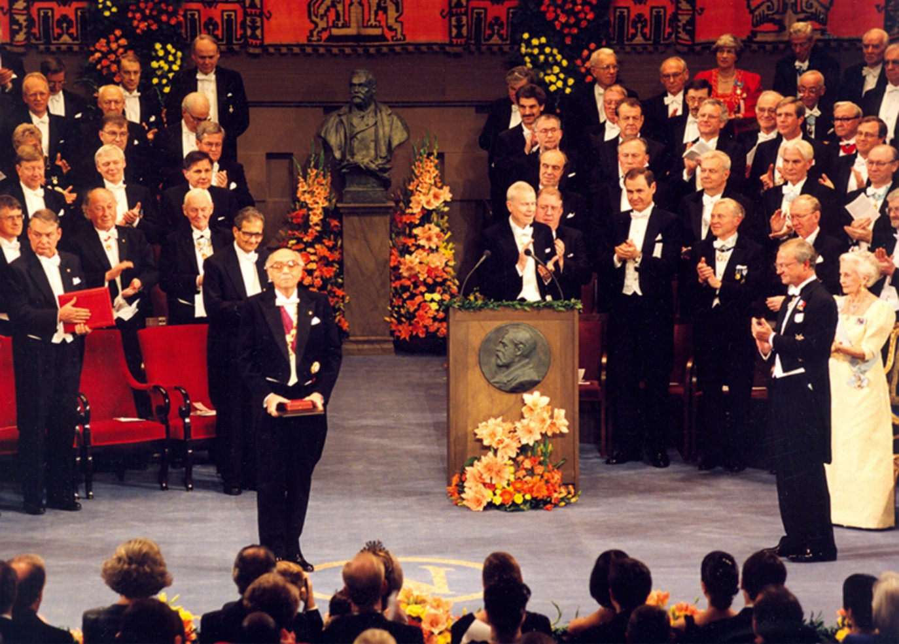

Prémios de Literatura
Vamos então, ver alguns dos prémios maravilhosos deste escritor, José Saramago.
Prémio Nobel da Literatura
José Saramago foi muito conhecido também por ser eleito com o Prémio Nobel da Literatura, em 1998.
José Saramago foi muito conhecido também por ser eleito com o Prémio Nobel da Literatura, em 1998.

Prémios de Literatura em Portugal
Fundação José Saramago / Casa dos Bicos
A Casa dos Bicos foi inaugurada em 2007, para a exposição de trabalhos de José Saramago, e explicar a vida deste escritor.
No ínicio, a Casa dos Bicos, ou Casa de Brás de Albuquerque, foi construída em 1521 e inaugurada em 1523, a mando de D. Brás de Albuquerque, filho natural legitimado do segundo governador da Índia portuguesa.
Atualmente, é a Fundação José Saramago, situada na Rua dos Bacalheiros 10, 1100-135, Lisboa.